Can the arcology go to a free camera (orbit, tilt, smooth zoom) and still look like the game? Yes. A working prototype draws today's world, sprites, cables and lighting in WebGL. At the default angle you can hardly tell it from the 2D renderer, and you can turn it to any angle and lay cables from there.
Prototype: experiments/spall-3d/ (press 3 to switch views) · one new module, 766 lines · nothing in stratum-wires changed
Looks the same at rest
At the iso angle the 3D renderer redraws the 2D frame: 74% of pixels within 6/255, 93% within 32/255. The rest is overlays not ported yet.
Free angles hold up
Every angle in between still reads as Spall: crisp pixels, the same palette, the same cables. Edges shimmer while turning; nothing creeps while panning.
Cable work gets easier
The existing cable tools (grab, lay, tie, slack, girders, posts) run through the 3D camera unchanged. Low angles along a void are now possible.
Recommendation
Adopt this approach: sprites stay the art source, planes carry them in 3D. Iso stays the resting view; free orbit is a working mode.
Same frame, two renderers
Drag the divider. The left side is the current canvas renderer. The right side is the WebGL renderer at the same camera, with live lighting on in both and light shafts off.
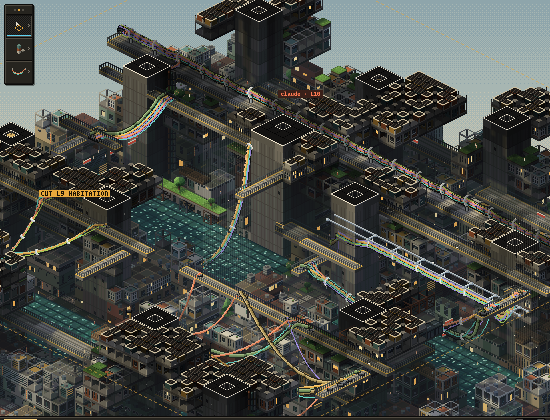
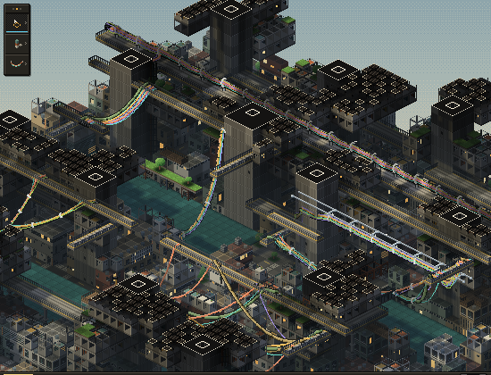
2D canvas3D WebGL
Where they differ: the lift cars, people and the light-well beam are overlays drawn by the 2D renderer that the 3D view doesn't draw yet. Cut faces edge slightly differently, because 2D sprites overlap their neighbours in painter's order and 3D faces stop at their true edges. Shadows in the canopy are a little darker in 3D.
2D · art pixels ×4
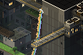
3D · art pixels ×4
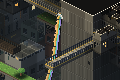
74%of pixels within 6/255 of the 2D frame
93%within 32/255
4–6 msGPU per frame at 554 × 434 art px
~14 msCPU for the cable pass (readback + 2D cable drawing)
Turning it
Orbit from the default view through 90°, tilt up to 65°, then a smooth zoom from 2× to 4.8×. These frames are captured straight from the renderer. Watch the edges while it turns: that crawl is the one cost of free rotation, and every project that tries this hits it.
Orbit, tilt, zoom. 800 × 600 at 30 fps. The zoom sweep uses fractional scales with the sharp filter, so pixels stay square.
azimuth 25° · tilt 30°
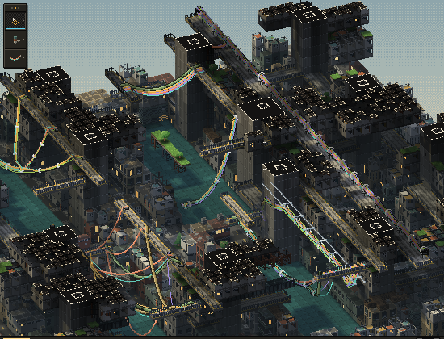
azimuth 25° · tilt 45°
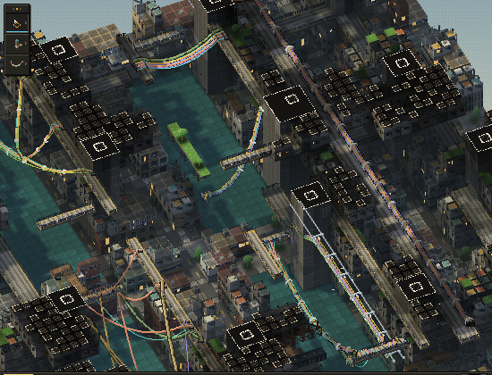
azimuth 45° · tilt 62°
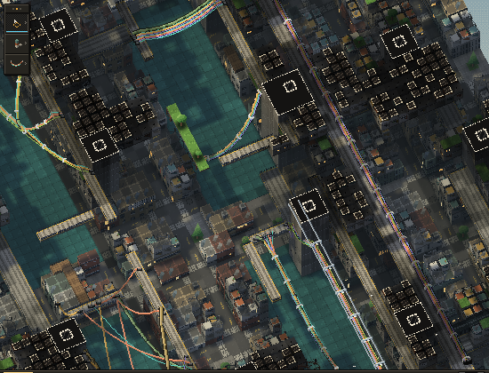
top-down
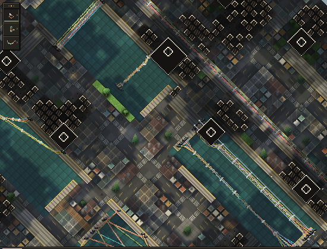
azimuth 0° · elevation view
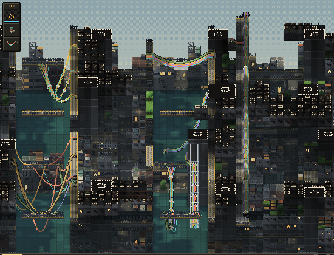
azimuth −20°
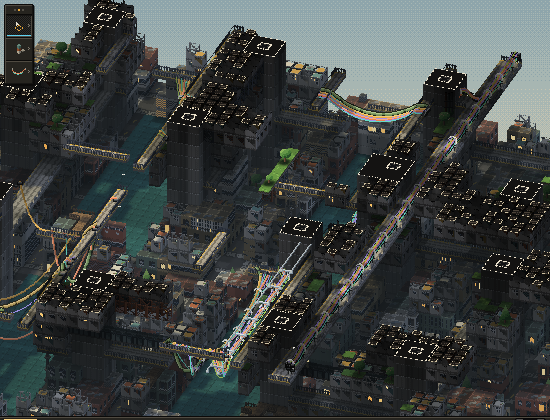
The case you asked about: hanging things
This is the view the four rotations can't give you. The camera sits low and looks along a void at 16° of tilt, so you can see the drape of each cable and which ledge it lands on.
azimuth 10° · tilt 16° · zoom 3×
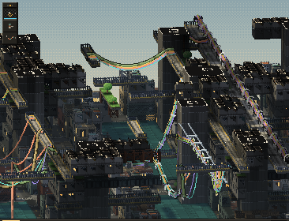
Laying a cable from a low angle. The cable tool is selected; press on the spur deck, drag across the void, release on the far balcony. The cable anchors and drapes. Everything here is the existing 2D tool code: wireDown, wireMove and wireUp run with the 3D camera swapped in. Hovering also works from any angle; the cell under the pointer comes straight from the depth buffer.
How the prototype works
The plan was to avoid redrawing anything. Every sprite in Spall is painted in face coordinates (left face, right face, top diamond), so its pixels already know where they sit on a box. The renderer only has to put boxes where the cells are and project each sprite back onto them.
Cells become planes. Each cell type becomes a few axis-aligned planes: a box for buildings and cores, a slab for streets and decks, four lattice sides for trusses and frames, edge planes for railings, and an inset box for a capsule inside its cage. Faces shared by two solid cells are dropped.
Each plane is painted by its own sprite. A point on a plane shows the sprite pixel it covers in the default view. At that view every fragment lands on its own pixel, so the 2D frame comes back pixel for pixel wherever the geometry covers the sprite. Transparent pixels drop out, which is how trusses, cages and railings stay open.
Back faces mirror. A plane seen from −x or −y shows the +x or +y face's pixels, mirrored. That is what the 2D game draws when you turn it 180°, so all four classic views match their 2D versions.
Soft things face the camera. Trees, masts, risers, tanks and the crane are camera-facing sprites standing on their slabs. The slab art and the standing art are separated by subtracting the floor sprite.
Cables are drawn by the 2D code. The cable renderer already projects true 3D points with projIso. Swap in the 3D camera, read back a depth target, and it draws the same pixel tubes, ties, sockets, girders and birds, correctly occluded.
Pixel-locked output. The scene renders at one art pixel per pixel into a small target. The camera snaps to whole art pixels and the leftover fraction shifts the final upscale, so panning is smooth with no pixel creep. Zoom is any real number: the target is scaled up with square pixels and a one-pixel blend at the seams.
Lighting moves to the GPU. Sky light, occlusion, sun and shadow, and mist run per pixel in the shader, from the same light volumes as 2D, uploaded as 3D textures.
Two texel modes, and why projected wins
Iso pixel art lives on the screen grid, not on the surface. Projected mode keeps it there: exact at the iso view, but from above a top face shows its pixels as small diamonds. The alternative gives each face its own square texel grid (8 across a cell, 12 up a level), like Minecraft. It looked cleaner on paper. In practice it loses detail at the iso view (deck rails, roof edges) and isn't noticeably better off-angle.
projected (default) · zoom 4×
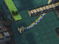
face texels · same view
Smooth zoom
Between whole-number scales, plain nearest-neighbour scaling makes some art pixels one screen pixel wider than others (left). The sharp filter keeps every art pixel the same size and blends only the one-pixel seam between them (right). At whole-number scales the two are identical.
1.5× · nearest
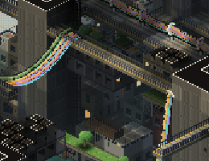
1.5× · sharp
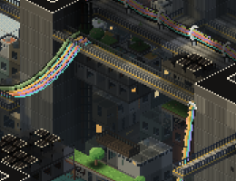
What breaks off-angle
All of these come from the art being drawn for one view. None blocks the move; each has a known fix if it starts to bother us.
Rotation shimmer. Edges and fine detail crawl while the camera turns. Nobody has solved this for orthographic pixel art (see Research). Mitigations: ease back to an iso view on release (built in, O), or snap rotation in steps.
Roof props are decals. AC units, vents and rooftop boxes are painted into the top diamond, so seen from above they flatten into stickers. Fix: give roof props their own small boxes.
Left and right swap in the side views. At the two 90° views, window-side choices (capsule windows on the "left" face) land on the other wall. Hardly visible.
Billboards turn with you. Trees, the crane and masts always face the camera. Trees and masts get away with it; the crane does not. Fix: make the crane a few boxes.
Top faces from above. Projected top faces show diamond-shaped pixels from steep angles. Water and decks show it most.
Not ported yet: light shafts, bloom, the well beam, steam, lift cars and people, water shimmer, window flicker, ghost-above outlines, the cut outline and label, build ghosts and drones, and building or demolishing (those still pick cells through the 2D path).
The options
Six ways to get a free camera without losing the look, rated for Spall specifically. The prototype is option C.
Approach
Looks like today at rest
Free orbit
Art cost
Engine cost
Fit for Spall
A · Stay 2D, more angles Pre-draw each sprite at 8 or 16 headings (RollerCoaster Tycoon, SimCity 4)
exact
steps only
Every sprite redrawn per angle; procedural sprites would need a 3D source anyway
Low
no Still steps, and angles multiply the art
B · Billboards in 3D Today's sprites on camera-facing quads (HD-2D, Don't Starve)
exact
buildings break
None
Low
partly Right for trees and masts, wrong for architecture
C · Sprites projected onto planes The prototype
near-exact
yes, shimmers while turning
None to start; small boxes for props over time
Medium; the prototype took one session
yes Keeps the procedural sprites as the single art source
D · Native low-poly + hand-painted textures t3ssel8r, SimCity 4's large buildings
close if texels are 1:1
yes, shimmers while turning
All art redone as meshes and textures
Medium
later Where C goes as kit pieces need real shapes
E · Voxels, one voxel per pixel Fez's trixels, Voxel Tycoon
close, blockier
90° clean, free orbit shimmers
All art re-authored in voxels
High (≈94M voxels at 8×8×12 per cell)
no The October ray-cast detour showed the blockiness
F · Texel splatting Ebert 2026, rotation-stable cubemap texels
perspective look
stable
As D
Research-grade
watch Built for first-person views
What others have done
From a survey of write-ups, repos and shipped games:
The standard pipeline is settled. Orthographic camera, low-res target, nearest upscale, camera snapped to the texel grid with the remainder applied in the upscale. Everyone uses it: David Holland's Godot write-up, aarthificial's smooth pixel camera, Kody King's three.js pixel example, UPixelator, ProPixelizer. The prototype does the same.
Rotation shimmer is unsolved for orthographic. Kody King's example snaps orbit to 9° steps and zoom to 0.1 steps. Unity threads on rotating pixel cameras end without a fix. Only the 2026 cubemap methods (texel splatting, Shadowglass texel marching) are rotation-stable, and both target perspective views.
Fez is the closest precedent for "collapse to 2D". 16³ trixels per block; "when the game collapses into orthographic 2D, all those little cubes become pixels." It turns in 90° steps and freezes movement while turning.
SimCity 4 is the closest city builder. It mixes real 3D terrain with billboard small buildings and simple polygon large ones, under a fixed camera. Our mix (planes for architecture, billboards for soft things) is the same idea with a free camera.
No shipped pixel-art city builder has free orbit. As far as the survey could find, 2023–2026 included. Voxel Tycoon is voxels, not pixel-crisp. That looks like open ground.
Cables are a known hard case. Rotated pixel line segments look wrong once their ends aren't level (Unity forums). Drawing cables as screen-space pixel tubes from 3D points, as Spall already does, sidesteps it.
Recommendation
Make the 3D renderer the game's renderer, with the iso view as home. The sprites stay the single art source. Free orbit and tilt are for working: hanging cables, checking a drape, looking into a void. The camera eases home when you let go, unless you pin it.
Close the gaps (estimate: a day). Port shafts, bloom, the well beam, lift cars and people, water shimmer and flicker. Move building and demolish picking to the depth buffer, which already works for hover.
Make the cable pass GPU-native (estimate: a day or two). Draw tubes as screen-space-width strips in a shader, so the depth readback goes away and frames get cheap enough for 60 fps at large windows.
Give the worst decals real shape (ongoing). Roof props, the crane, rooftop boxes. Each is a few boxes on the existing sprite.
Decide on rotation feel (your call). Free orbit with ease-home, or stepped orbit (15° or 22.5°) that never rests between angles. Stepped turns trade smoothness for less visible shimmer.
Then the higher-resolution question gets an easy answer. Zoom is now continuous, so "closer zoom" can mean a 2× art set picked by zoom level, OpenTTD style, without touching the camera code.
One thing to decide first: keep the 2D canvas renderer as a fallback, or retire it once the 3D view has everything? Keeping both costs little (the 3D module only reads the world and sprites), but every new overlay would need drawing twice.
Running it
cd ~/Dropbox/projects/spall/experiments/spall-3d && ./build.sh
python3 -m http.server 5190 --bind 127.0.0.1 --directory ..
open http://127.0.0.1:5190/spall-3d/spall3d.html
Press 3 to switch views. It starts at exactly the 2D camera.
drag
orbit; it eases back to the nearest iso view on release while snap (O) is on
drag a cable or tie
grab it; the cable, tie, girder and post tools all work
right-drag, two-finger scroll
pan
pinch, wheel
smooth zoom about the pointer
QE
turn 90°
WS
tilt
9 · 0
top-down · back to iso
N · M
upscale filter · texel mode
[]
cut level, as in 2D
Files: src/91_gl3d.js (the renderer, camera and input), README.md (findings), mockups/ (these stills and both clips). The build concatenates ../stratum-wires/src unchanged, so the 3D view always tracks the current prototype.
Sources
David Holland, 3D Pixel Art Rendering (Godot): grid snapping with screen-space correction.